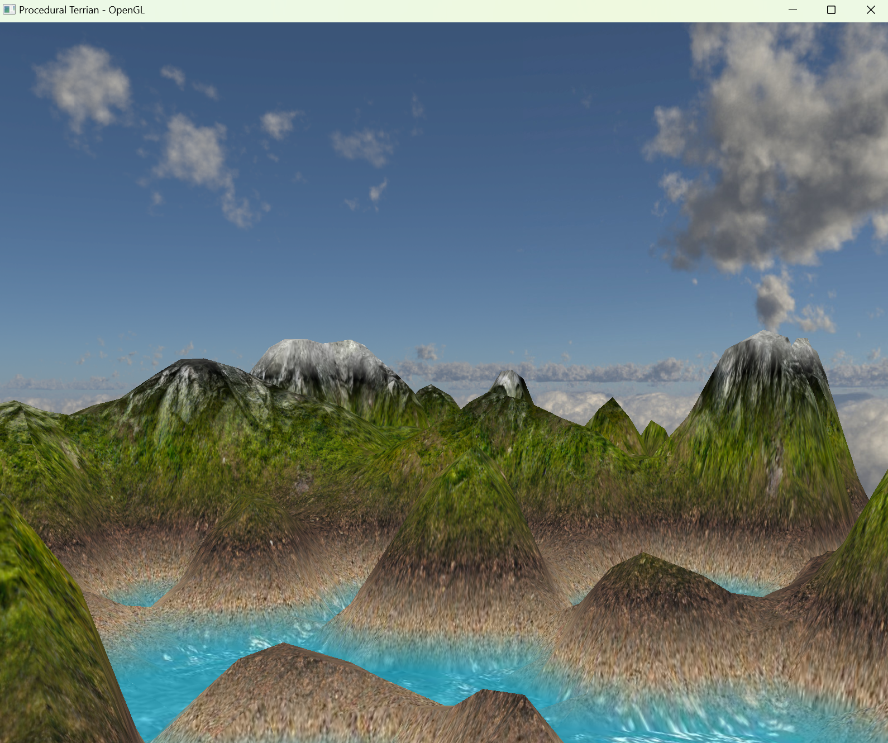
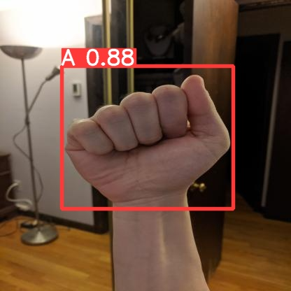
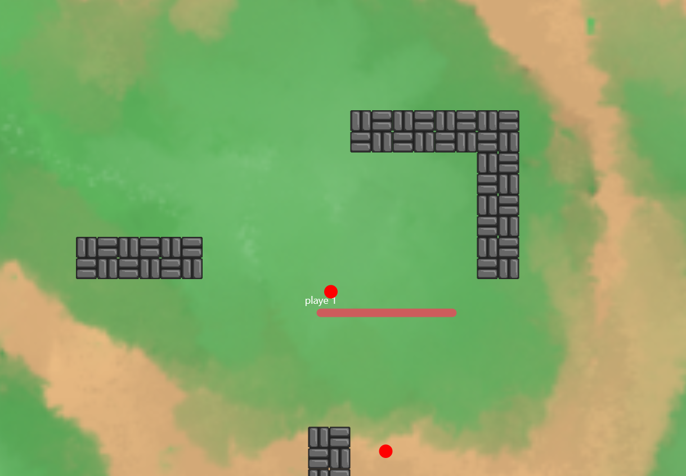
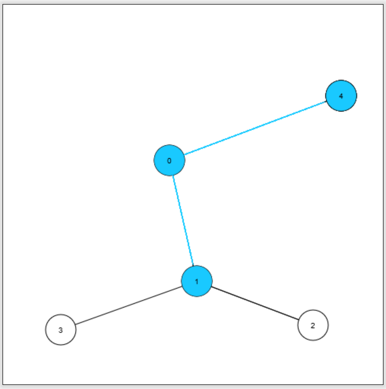

Dax McPartland
Computer Science Major at University of Utah
Projects

Procedural Terrain Generation
Terrain generation using Perlin Noise.

SignLearner
Mobile app to assist Sign language learners.


Online Snake Game
Multiplayer snake game.

BFS Visualizer
Breadth first search algorithm visualizer.